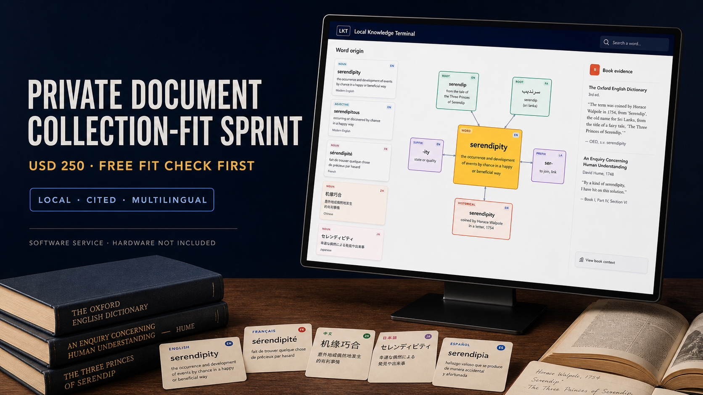

Free fit check · one collection · existing hardware
Turn one private collection into cited local cards.
Tell me what you have, who will use it, and the machine it must stay on. If it fits, the fixed USD 250 sprint maps the data, evaluates up to 12 agreed source units against 20 questions, builds up to two cited browser cards, and gives you a written go/no-go.
No account or source upload. Nothing is sent while you fill in or review the fit check. After review, you can send the answers through encrypted private intake or open the same request in your email app. Inspect the code and tests →
One collection, one language goal, and one existing machine. Hardware, shipping, custom OCR, bulk conversion, production deployment, and ongoing support are excluded.

A terminal, not another chat tab
Built around durable cards.
The browser interface is the first display. E-paper, microphone, and audio remain separate adapters, so the knowledge core does not depend on one piece of hardware.
Ground the answer
Retrieve from a private book or reviewed dictionary first. Citations are attached from those records, not invented by the language model.
Compose one card
Question, Answer, Word Card, Word Origin, Root, and Affix remain distinct modes with one clear teaching point per screen.
Keep it local
SQLite stores accepted knowledge. A local Qwen model prepares bounded artifacts; private books, indexes, and model files stay outside the public repository.

Words with a memory
See where a word came from.
Word Origin uses a directed ancestry graph rather than a paragraph pretending to be one. Nodes can distinguish book evidence from model context, while the primary card stays readable.
- English meaning remains primary.
- Japanese and Chinese can add pronunciation guides.
- Root and affix views reuse accepted atomic evidence.
See the deliverable before you enquire
Read a real, bounded fit report.
The public sample applies the sprint format to LKT's own documented reference collection: 16,800 current-code structured records across five local indexes, with raw source material and derived indexes kept outside Git. It is project-owned evidence, not a customer result or testimonial.
Data and privacy map
See what becomes a reviewed local record, what stays outside the repository, and where stored provenance enters the card.
Representative proof
Inspect up to two cited browser cards backed by the current card contract, with clear boundaries around customer-approved sample material.
Go/no-go boundary
Read the conditions for a useful sprint and the separate-scope cases: image-only PDFs, custom OCR, shipped hardware, or production operations.
Read the complete sample report
Concrete format, measured facts, no invented client outcome. Trace one passage graph →
Related work you can inspect
The collection work is already public.
The fit sprint is new, but it is grounded in years of organizing technical, multilingual, and book-length material into durable reading tools. These projects show the relevant craft without pretending that they are paid LKT client engagements.
Physics archive
Susskind lectures
A maintained collection of transcripts, subtitles, notes, TeX, course PDFs, and a public web reader.
Inspect the archive →Reproducible editions
PocketPolyglot
A Studio, CLI, and TeX pipeline for aligned multilingual books with pinyin, furigana, and reusable source data.
Inspect the pipeline →Public output shelf
LinguaLeaf
A browsable shelf of multilingual reading editions, including Chinese classics and history in several formats.
Browse the shelf →Related public work is evidence of collection handling and publishing experience, not a claim that those projects were produced through this paid sprint.
Who the pilot may fit
A small, private place for a serious collection.
Terminology and language study
Test a rights-cleared glossary, dictionary, or reading collection. When the source supports it, cards can preserve citations while tracing roots, affixes, and word history.
Libraries and exhibits
Explore a bounded collection through an ambient display without exposing the source books to a cloud service.
Private research
Build a focused terminal around material that should remain on local storage, with visible evidence boundaries.
Test a research-PDF collection →Working terms
Know the boundary before work starts.
The free fit check comes first. If the collection fits, the written scope uses these same terms so timing, corrections, privacy, and cancellation are clear before payment.
One sprint at a time
Delivery is ten business days after the scope is accepted, payment is confirmed, and the complete agreed sample and machine-access path are ready. The clock pauses while a required input is missing.
One correction window
Send one consolidated list of up to ten factual corrections within seven calendar days after delivery. New sources, questions, languages, formats, interfaces, or deployment work need a new scope.
Pay only for delivered work
Cancel before source transfer or processing begins for a full refund. After work starts, only completed, delivered items are retained: USD 75 for the map, USD 125 for the evaluation and cards, and USD 50 for the report and correction pass.
Customer material is not published or reused without separate written permission. Working source copies are deleted within fourteen calendar days after acceptance, cancellation, or refund unless the written scope requires earlier deletion or limited records must be retained by applicable rules. Written clarification is available during the seven-day correction window; hosting, maintenance, hardware support, and ongoing operation are excluded.
Founding collection-fit sprint · USD 250
Bring one collection and one real use case.
A deliberately small first engagement: one private collection, one language goal, and one existing machine. After a free fit check, the paid sprint produces a written data, citation, and privacy map; evaluates an agreed sample capped at 12 source units and 20 test questions; builds up to two cited browser cards when the source is usable; and gives a clear go/no-go recommendation for a larger deployment. One factual correction pass is included.
- Customer-provided material only; you must have the right to use it.
- The written scope defines one source unit—for example, a passage, record, or representative page—before payment.
- Hardware, shipping, custom OCR, bulk conversion, production deployment, and ongoing support are not included.
- A supplied device is a separate, quote-only product.
- Payment is requested by Stripe only after the fit and scope are accepted.